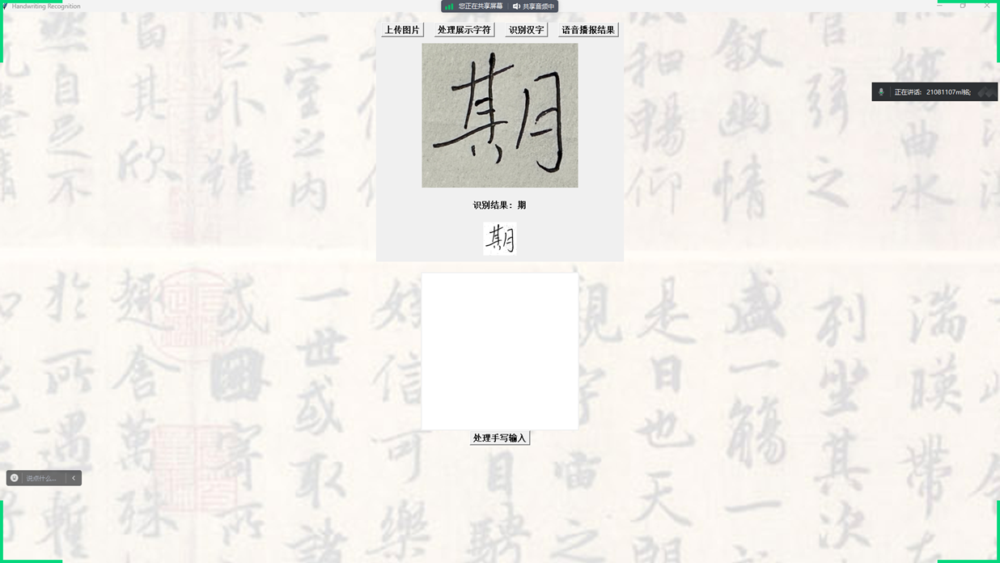
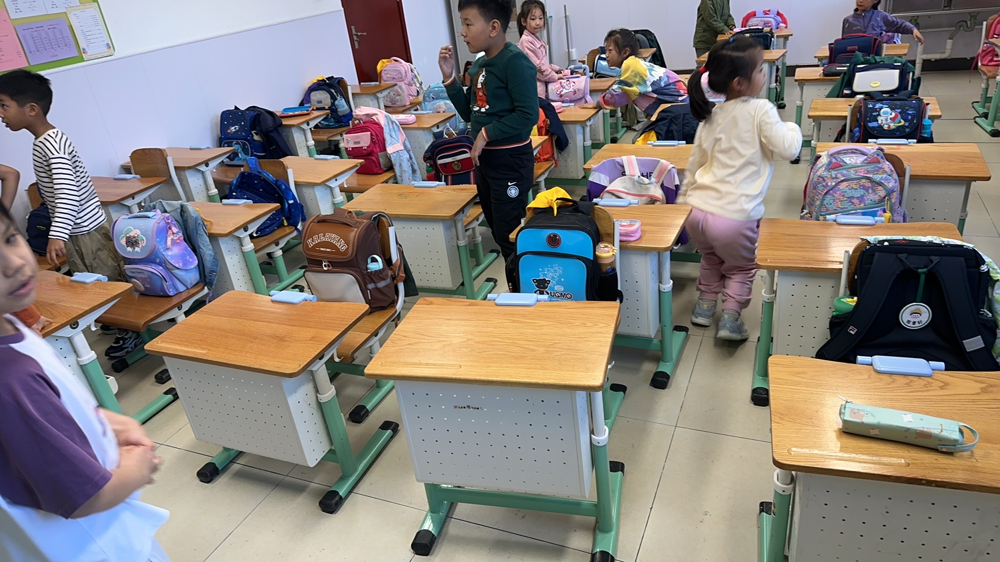

AI UXwatchOS + APIs
WristMind Apple Watch AI Assistant
Streaming output, provider settings, stored API keys, syntax-highlighted code, and image-response viewing in a small-screen interface.
Open case studyI evaluate AI like a builder and explain it like a teacher: prompt behavior, API constraints, latency, multimodal output, ethics, classroom fit, and whether a student can actually use the tool without getting lost.
The matrix connects AI prototypes, research workflows, technical explanation, and workshops to practical outcomes for learners and builders.
These case studies show how I test tools, explain systems, and turn prototypes into usable guidance.
Streaming output, provider settings, stored API keys, syntax-highlighted code, and image-response viewing in a small-screen interface.
Open case study
Character generation, preprocessing, background removal, reverse tagging, and live avatar constraints.
Open case study
Image preprocessing, neural recognition, and voice feedback for a practical multimodal interaction.
Open case study
A VR library prototype that demonstrates interaction design, technical testing, and user-facing clarity.
Open case study
A serious interactive narrative showing how technology can explain behavior, consequence, and reflection.
Open case study
Hands-on teaching experience that supports training, workshop facilitation, and plain-language AI guides.
Open case studyI turn evaluation findings into guides, lessons, toolkits, examples, discussion prompts, surveys, and feedback loops that help people use AI more carefully.
Short comparisons of models/tools by task type, cost, strengths, risks, and student workflow fit.
Reusable examples for learning, writing, coding, research summaries, and creative prototyping.
Plain-language guidance on attribution, privacy, hallucination checks, and where AI should not be used blindly.
This portfolio highlights how I evaluate emerging tools, build working prototypes, and explain technical tradeoffs clearly.
Email: jasonwang792@gmail.com | GitHub: github.com/harrypotter9914